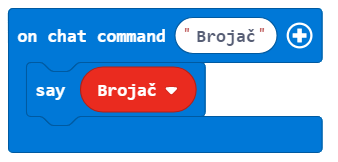
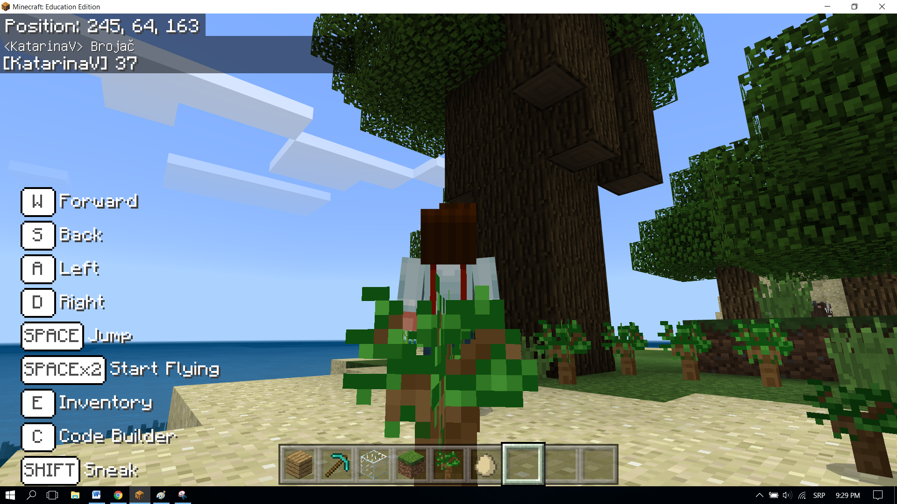

Project Task - How many trees are there?¶
A computer needs containers for storing numbers, texts, and other information, so it can make some decisions based on that information. For example, if we want to do a weather forecast, we need variables such as temperature, time of day, days of the week, precipitation, etc.
A variable can be understood as a space in the computer memory, something like a box, in which, during the execution of the program, we can store some interim values. (e.g. Number of trees planted in the world).
Every variable stores a specific type of information. The first time we use it, we need to define its type (number, string (text - a string of alphanumeric characters), logical (true, false)). From that moment until the end of the program, we can only store that specific type of information in that variable.
Variables have names. When we want to use the value of the variable, it is enough to use its name.
Important: Choosing the right name for the variable makes it easier to understand the programs we created. For example, if we want to store the number of player’s lives in a game, we can name the variable number_lives, which would be better than alive or number. The names of variables contain letters, numbers, and special character _(underscore), and they must always begin with a letter.
In the previous example, we saw that the position of an object (character, world) is a special kind of variable, which contains three numbers that describe a particular location in the three-dimensional space. These numbers are called X, Y and Z coordinates.
We will use an example of a program, which counts the number of trees planted by the character while moving around in the world, to demonstrate how we can create and use variables.
Stage 1.
Thinking about the task: Trees are planted by moving around in the world. Every time a tree is planted, the number of trees in the world rises.
Stage 2
Open Code Builder (by pressing the key C); an editor window will appear where you can stack blocks.
To count the planted trees, we will upgrade the program from the project Planting trees:

We need to create the variable Counter, which will store the number of planted trees.
A variable is created in the following manner, in the category Variables (1), click on the button Make a variable (2) and type in the name of that variable in the field (3), in our case Counter . By clicking the button OK (4), you have created a variable (5):
The initial value of the variable Counter is 0.
Setting the initial value (resetting to the initial value) is defined with the block  . This means that every time the program starts, Minecraft sets the value of the counter to 0, and the counting of trees can begin.
. This means that every time the program starts, Minecraft sets the value of the counter to 0, and the counting of trees can begin.
From the category  choose the block . We will use this block as the “trigger” for resetting the variable Counter.
choose the block . We will use this block as the “trigger” for resetting the variable Counter.
From the category  drag the block
drag the block  Counter to
Counter to 0:
And now, we will upgrade the program for Planting trees:
by adding the part which will register when the value of the variable Counter changes.
Now we need to use the variable Counter, whose value is set to 0. The value of this variable will change (increase by one) every time the character places a block, i.e. plants a tree.
For this, we will use the block from the category Variables. We will drag this block to the part of the code which is used for placing (planting) trees, as well as the block which we will use to display (say) how many trees have been planted.
The look of the code after the changes:

Finally, in order to see how many trees were planted, we will introduce the block into which we will drag the block  . Into this block, we will insert the block
. Into this block, we will insert the block  .
.
The look of the code:
The look of the program for counting trees:

Stage 3
Testing the program. Click on the button .
{kind=link}
Once we have tested the program, we can conclude that it did what we wanted. It counts how many trees the character planted by moving around in the world.